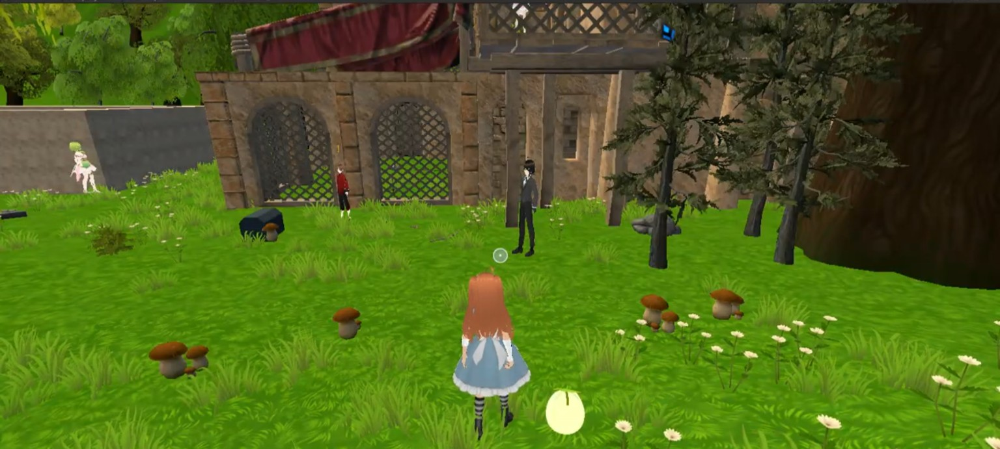
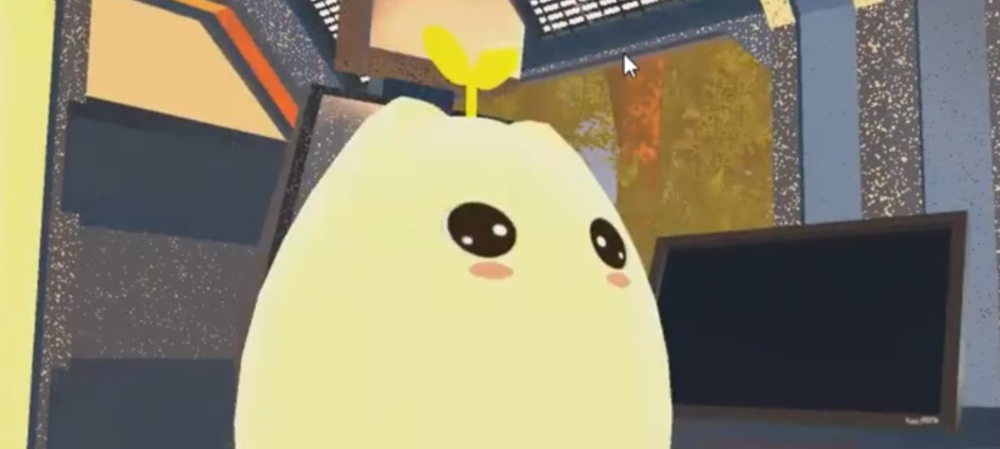
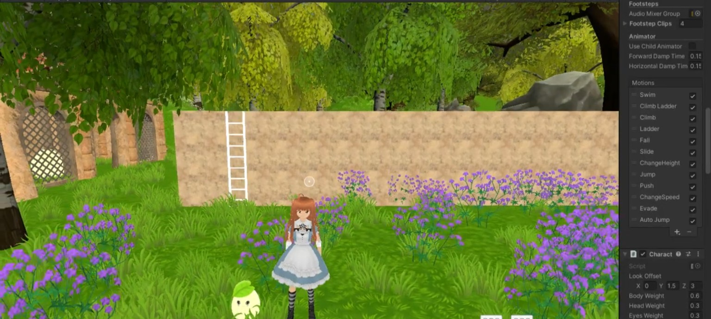

Habla con Mishi
Una experiencia conversacional con inteligencia artificial dentro del videojuego.
✦ Conversación con IA
Conoce a Mishi y acompaña a Alicia en una aventura 3D que reúne inteligencia artificial, misiones de autocuidado y recursos de apoyo para estudiantes.


Mishi combina una experiencia lúdica con herramientas digitales que invitan a detenerse, conversar y practicar el autocuidado.
Una experiencia conversacional con inteligencia artificial dentro del videojuego.
Actividades gamificadas que invitan a practicar hábitos positivos y acciones de autocuidado.
Un acceso rápido a un recurso audiovisual sobre primeros auxilios psicológicos.
Mishi es una pequeña criatura slime con orejitas de gato y una hojita en la cabeza. Sigue a Alicia mientras recorre un entorno fantástico creado en 3D.

Una propuesta de titulación que explora el diseño de una experiencia interactiva orientada al bienestar de estudiantes de educación superior.
Abre los apartados que quieras explorar; la información extra no ocupa toda la página de golpe.
La propuesta acerca prácticas de autocuidado mediante una experiencia digital amable. Las misiones se inspiran en conceptos de bienestar y gamificación.
La integración de una API de IA permite una experiencia conversacional con un personaje dentro del videojuego. No está planteada como diagnóstico ni terapia.
Unity 3D, C#, OpenAI API, VRoid Studio, UniVRM y Figma. Estas herramientas apoyan el desarrollo del entorno, los personajes y la interacción.
Ampliar las misiones, seguir mejorando la experiencia de usuario y evaluar la propuesta con participantes y orientación profesional.
Una nota importante: Mishi es un prototipo académico orientado al bienestar estudiantil. No reemplaza la atención de profesionales de salud mental ni constituye una herramienta de diagnóstico o tratamiento. Ante una situación de riesgo, busca ayuda profesional o servicios de emergencia de tu localidad.
Explora las demostraciones y conoce más sobre el proceso detrás de Mishi, desde la idea hasta el prototipo.